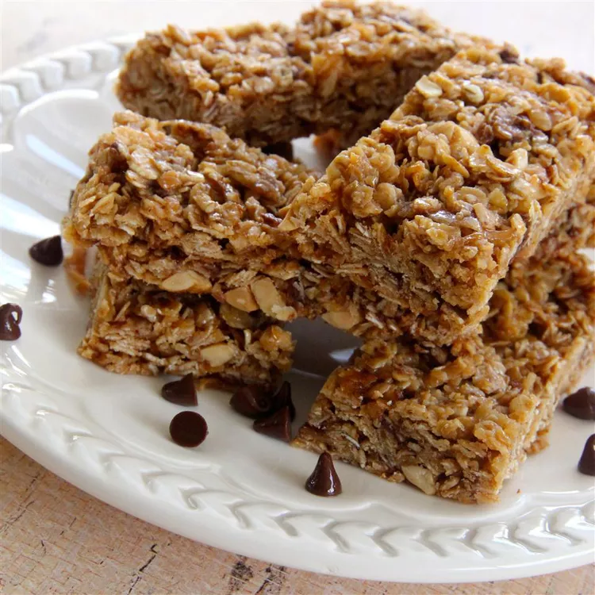

Granola Bars

Granola bars
This granola bar recipe is super easy to make with oats, coconut, and peanut butter for a wholesome snack any time of the day!
Ingredients
- cooking spray
- 2 cups rolled oats
- ½ cup shredded coconut
- ½ cup honey
- 2 tablespoons creamy peanut butter
- 1 teaspoon vanilla extract
- ⅛ teaspoon salt
Steps
- Preheat the oven to 325 degrees F (165 degrees C). Grease a 9-inch square baking dish.
- Spread oats and coconut evenly across a baking sheet.
- Toast oats and coconut in the preheated oven until browned, about 10 minutes; transfer to a large mixing bowl.
- Mix honey, peanut butter, vanilla, and salt in a saucepan over medium-low heat. Cook and stir until smooth. Pour honey mixture over oats and coconut. Stir to coat. Spread mixture evenly into the prepared baking dish.
- Bake in the preheated oven until beginning to dry, about 15 minutes for crunchy granola bars, less if you like them chewy. Cool completely before cutting.